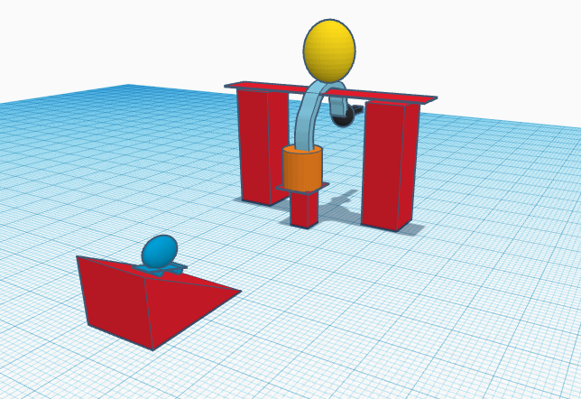
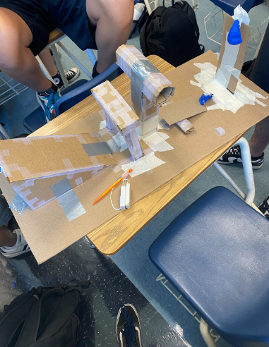
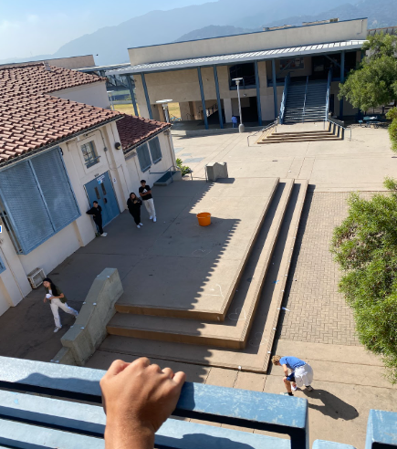
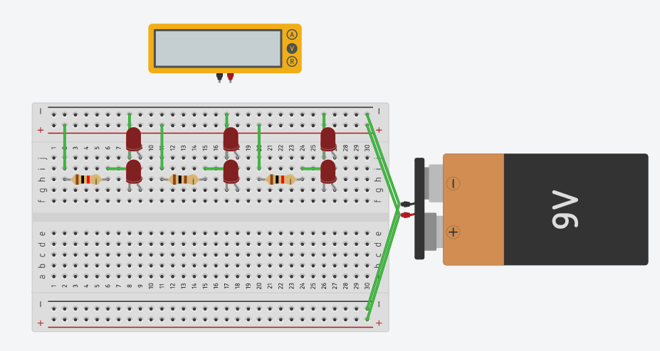
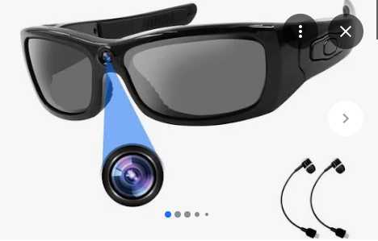
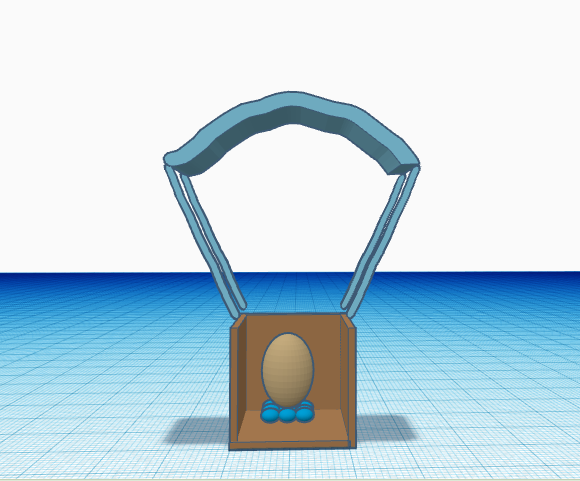
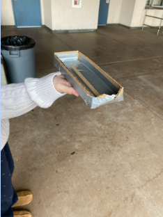
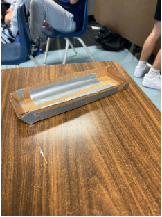

During my first week of engineering I had a lot of fun. I learned how to create my own website as well as many different coding options to specialize it. We did a team bonding activity where a few kids out of a group of about 20 had pipes and we all had to figure out how to work together to lead a marble through the pipes and into a bucket.
As of my second week of engineering, I have learned plenty of safety precautions and the proper gear to be wearing when engineering. I've also learned about the website tinkercad and started a design on a Rube Goldberg machine. Our weekly challenge was to create an everyday household item on tinkercad using only basic shapes. I decided to do a vacuum cleaner and it turned out extremely well. I've made a few friends in this class and I enjoy the teaching style of my teacher. I can't wait to start building and designing actual projects.
For my third week of this class, we worked on developing our project and actually started to lay the foundation down on it. My group has finished most of the building of the design but there are still a few things required to be fully completed with the project. We will probably finish the building aspect of the design and move to testing withini the next class period. This week we also had a challenge in which we were asked to create a paper boat that would float on water while also being able to hold weights. My group failed to meet the expectation but I learned that surface area is very important when it comes to making things float.
In our fourth week of engineering, we began to finish our projects and started to test them. My group took a long time to build and reinforce the project but after a lot of hard work and tape we finally completed the build. Our project popped the bloon after one small adjustment that was required and I was extrememly excitd because I was tired of our project taking so long. All in all I thouroughly enjoyed this project and found it very amusing and I built freindships with the kids in my group.
The fifth week of class included the dissection of a chromebook as well as a lesson on electrical engineering. On Monday we had a special guest present us a slideshow all about how computers work and what electrical engineers do. On Wednesday and Friday we took apart an old chromebook and put them back together. My group was relatively good at this besides a few minor mistakes. We worked together well and did a good job witht the entire process. I found the project pretty funa and it was good bonding with my classmates.
During week six we went into further depth of mechanical engineering and finished rebuilding our chromebook. After we completed our task, we had to start learning about more types of engineering and the teacher asked us which engineering field we would most likely pursue. I think I would want to go into architectural engineering or some sort of creation of buildings. I find intererst in these sort of complex ideas and I've always enjoyed building cities out of legos.
Week seven of class included a lot of designing and researching. We were asked to research some biomechanical parts for different animals and create a design of something similar. I chose to create a prosthetic bird wing that was made a keratin and included built in solar panels to power the movements of it. At the end of the week we did a project on developing the steps of making a peanut butter and jelly sandwich to show that specification is very important in coding. I learned that a lot of people are very vague with their directions and don't make things very clear.
For week eight we have gotten into the building of bottle rockets and have started to develop our designs. I am planning on making a very typical bottle rocket with four fins (one on each side) made out of cardboard which are attached to a 2 liter bottle of coke. On thursday, we did a project where we had to build a paper airplane and try to land it in a bucket from 2 stories up. I built a very flat airplane thinking it would be easiest to try and glide it across the air and land it in the bucket but it just ended up doing a flip and getting stuck on a pillar. The experiment was still fun but it sucked I couldn't try it more than once.
We further developed our design of the bottle rocket in week nine and my group ended up creating a double decker plane. We placed the bottle in the middle and put two triangular pieces of cardboard on either side. The plane was super fun to build because it took a lot of thinking and consideration and I think our group did a very good job design. I wasn't in class Friday because I had to perform in a school assembly during the period so I wasn't able to see how well our rocket did but I heard that ours did pretty good but not amazing.
In week ten we learned about environmental engineering which I think is pretty interesting. We had a lecture on Monday about all the different parts of the job and how it works and then on Wednesday we did a lab where we attempted to filter water as much as we could with cotton balls and small/big rocks. We also did a Halloween challenge where we estimated how many candy corn could fit on a sheet of paper and our group almost got it spot on and were closest to the actual number that was able to fit.
As of week eleven we learned about electrical engineering and the teacher explained to us the different requirments and such to be an elecrtical engineer. We also started working on electrical circuts and created different parallel and series circuts. It's extremely confusing but I had fun creating them. I'm not sure I would want to be an electrical engineer for a job but it seems like it could be entertaining to do on one's own time.
For week twelve we followed up on the electrical circuts and actually created a real working one. We did both parallel and series circuts and I understood the concept of both of them pretty well. I had a bit of trouble figuring out how to do the series one but I realized that I just had one of the connectors plugged in wrong so I plugged it into the right place and it worked instantly. Measuring the amount of volts and the resistence was a little confusing to me but I figured it out in the end and I enjoyed the lab in it's entirety.
During week thirteen of class we started to learn about civil engineering and discussed what type of work those engineers do such as bridges and other recreational construction. We also talked about our final project for the class in which we are supposed to build a bridge that can hold it's own (if not more) than it's own weight out of spaghetti noodles. I got assigned to a group and we started to work right away on designs and a tinker cad. We almost finished our first design on the last day of the week but couldn't quite finish it out so we decided it was best to leave it for next week.
In our first week of engineering we started on the subject of business and started a shark tank project. Our group decided to do a project on sunglasses with cameras inside of them. We pitched that it was a benefit for peoples' safety and was a very easily accessible video recorder in case you didn't have time to pull your phone out. Our presentation went well and the class seemed to like the idea.
For week two we got into chemical engineering and learned about all the different aspects. I learned that basically every company has an opening for a chemical engineer and that chemical engineers get paid lots of money. Working with nuclear items pay much more than many jobs but is also very dangerous. Being a petroleum engineer would probably be the way to go as it is relatively safe and pays very well. We also did a project mixing corn starch and water to create a substance that is soft without pressure but becomes hard as more pressure is applied. Our group added a very good mix of water and corn starch so the product turned out well.
For week three we listened to a guest speaker discuss chemical engineering in further detail. I found his presentation very interesting and I think that chemical engineering is actually very appealing to me. I appreciate how much money you can make from being a petroleum engineer and I think it's also a very entertaining subject to study.
As of week four we have started a project where we either build a car or develop an idea to improve some aspect of the school. In my group it's only Kaitlyn and I so we decided to make something that would better the school. We have started a new layout in which the hallways would connect for weather and traffic purposes. We also created the idea to put signs around the school that are designed to direct traffic during passing periods.
During week five Kaitlyn and I continued on our project to improve the school. We decided to only go foreward on making signs to improve traffic throughout the school and have created a few designs that we think would be efficient. Our signs consist of phrases such as "Stay to the right" or "Single file" and such. We will place them in the stairwells to try and influence students to not walk down the left side of the stairs is it creates a huge traffic problem.
In week six Kaitlyn and I started to think of how we wanted to create the sign and what shape to use. We decided on just a simple arrow and started to contemplate the colors to use on the sign to make it pop out. We were going to write the words in black and outline it with yellow but we decided it didn't look very appealing so we decided to scratch the idea. We ended up just using bold black letters and a black outline around the outisde of the arrow.
Week seven was a continuation of our project and a great week of Kaitlyn and I improving. We finalized our design and started to really put in the work to create it. We figured out where the best place to put the signs was and considered how we wanted to put it up. We figured that tape would be the best option but the sign didn't stick very well to the surface of the wall. We figured this was a simple fix and tried putting more tape but that also didn't work. With tape out of the picture we had to consider other ways to stick the sign to the wall.
For week eight I consulted with Mr. Gonzales on my project and he said it was mostly good. He told me I still needed to figure out a way to get the sign to stick but other than that he thought my idea was fantastic. I ended up deciding on just using tape and string to put up my sign and it worked very well. The sign stayed up over night and still hasn't fallen yet. I think Kaitlyn and I have done a very good job.
In week nine we tested and presented our projects and my groups worked flawlessly. I could already notice the difference in traffic in the stairwell and it seemed much easier to traverse with a very nice flow. On Thursday we did a project where we tried to make a self propelled gutter boat. My group decided to try create a boat that could row it's own rutters but it didn't work very well. The boat only went 2 feet and 3 inches but I think it looked pretty cool.
Week ten started off with Ms. Petrosian introducing us to a new project. She asked us to design something that would protect an egg from exploding after being dropped off a 3 story building. My group came up with the idea of putting the egg in a cardboard box with cotton balls and crumpled paper on the bottom in which we would place the egg on to reduce impact and then a parachute attatched to the top made from a garbage back and string.
For week eleven we finalized our design and started to create it. Our final design was a simple box filled with cotton balls and crumpled paper in which we placed the egg on top of to reduce the impact of the egg hitting the floor. Connected to the box was a parachute that we hoped to serve the purpose of slowing the fall of the box. We tested our design and it worked perfectly so we didn't change anything. When we did our final test where we dropped it off two stories our egg survived and our design had been successful.
In week twelve we started a new project in which we must build cardboard boats that will float in the pool here at CV. We started by creating our beginner designs. My initial design was an outrigger canoe where there was the main boat shape and then an extra piece lengthing the side of the canoe that helped stabilize it. Our group then came together and shared ideas and we decided to just go with a very simple boat design that had a large surface area to allow a better chance of flotation.
Week thirteen was a continuation of week twelve. We finsihed our design and implemented the dimensions into a tinkercad and then got to work on building it. We grabbed 2 36x12 pieces of cardboard and created a surface of 10ftx4ft for the boat. We figure this will be efficient enough to steer as well as a stabile surface to allow flotation. We then did more research on what allows a cardboard boat to float most efficiently and created some more ideas for the walls and top of the boat. We also made a prototype boat that ended up working terribly. Our design will probably have to change.

During week fourteen we added more to our actual boat and started to tape around the sides and bottom. Our plan is to tape the bottom so that the water doesn't destory the floor of the boat and create leakage. Our boat will have a flat bottom and a lifted nose to allow maximum flotation. We also created a second prototype with a slightly differet nose than the one before. We have yet to test it but hope it works much better than the first.
As of week fifteen we created paddles and slighty improved our actual boat. We created our first wall for the boat which was about a foot and a half tall. We also created our front of our boat and folded it into a triangle. We plan to also fold up the front so that the nose is up to allow for better steering and speed. We want our boat to be a mixture of flotation and speed.
For week sixteen we finally got our roll of tape that we could use on our boat. We greatly improved our boat and added walls to all sides of it. We also finished the bottom of our boat by adding an extra piece of cardboard to prevent leakage. We also changed our walls to be slighty higher as we did not want water to splash in and create extra weight that could sink it. We also want to change our front slightly because we don't believe it will float very well.
Week seventeen involved more boat building and finalizing. My group cut out all of our walls for the boat and then began to tape. The walls are about 2-3 feet high so that we have the ability to reach over without water getting into the boat. We then taped the walls in and decided to add a slight bit more height to the front of the boat to ensure it doesn't dip into the water and fill the boat. We finished taping and decorated the outside of the boat to make it look good. I also made a rice hat out of cardboard to wear while in the boat.